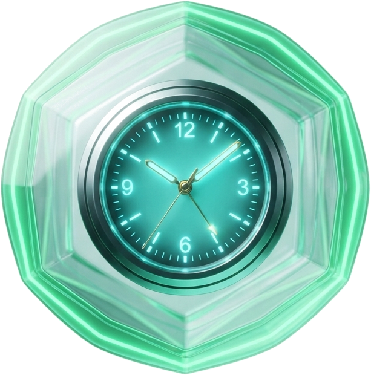

Actívalo
Esos segundos sirven para agacharte, cubrirte y protegerte.
La alerta no evita el sismo. Te da tiempo.
Revísalo en Android
Ajustes → Seguridad y emergencia → Alertas de terremotos
Detectar a tiempo cambia el resultado.